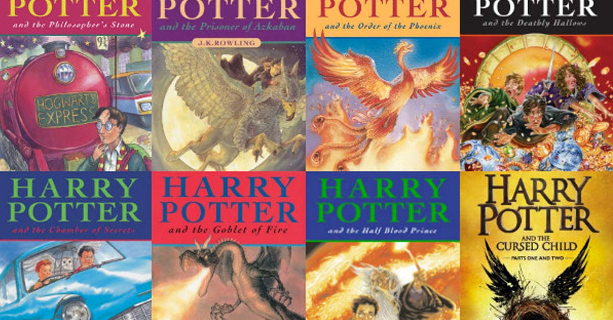

Anirudh Sarda
About me
I am Anirudh Sarda currently studying CSE in Brac University and my hometown is Dinajpur. Before that i completed my O'Level and A'Level from Scholars International School. First before getting into Brac i was not sure about which major to choose because I was really confused between Computer Science and Architecture as I was passionate for both but after spending few years getting to know the bare basics of Computer Science I can confidently say that I am really happy with the major I chose.
Hobbies
My hobbies are reading books, playing outdoor games and watching movies and TV series. I spend most of my free times doing all this. All this activities are a happy booster for me and this also makes me creative.
Books
My love for reading books started at a young age when i used to read Harry Potter books and it kept growing. What I truly treasure about reading books is its power to transport me to different locations whilst I’m still on my couch. It is a low budget travel option that I often take! Here are few books that i love among many other: - "Alchemist" by Paulo Coelho
- "Harry Potter Series" by JK Rowling
- "The Great Gatsby" by F.Scott Fitzgerald
- "Rich Dad Poor Dad" by Robert Kiyosaki
Sports
There are different outdoor games i love to play. It is more of a workout regime for me. I still remember the days when i would be the first one to reach to the field after school with my football or cricket bat and play badminton at evening during winter. Even though i dont get much time to play like before, still sometimes i find ways to do what i love that is play. Here are the sports I love:- Cricket.
- Football.
- Badminton.
Movies and TV Series
Watching movie and TV series is the best way to spend my leisure time. It can refresh my mind. Another important reasons to watch this is to acquire lessons from it. These lessons allows to appreciate and enjoy life. Here are some of my favourite movies and TV series:
Name Link Pursuit of Happiness Trailer Interstellar Trailer 3 Idiots Trailer Friends Trailer Stranger Things Trailer Money Heist Trailer Dark Trailer
Favourite
Here are few quotes that keeps inspiring me:
"Life's most persistent and urgent question is, What are you doing for others?" -Martin Luther King, Jr
"Happiness resides not in possessions, and not in gold, happiness dwells in the soul"-Democritus
"Believe you can and you're halfway there"-Theodore Roosevelt
"The best and most beautiful things in the world cannot be seen or even touched - they must be felt with the heart"-Helen Keller
"Find a place inside where there's joy, and the joy will burn out the pain"-Joseph Campbell
Project
Assignment-1:
CSE391 Piazza
GITHUB
Last Modified:
16/07/2020 18:30:15
Location: Dinajpur